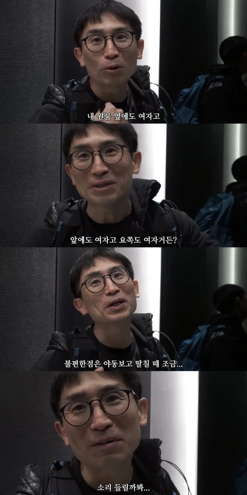
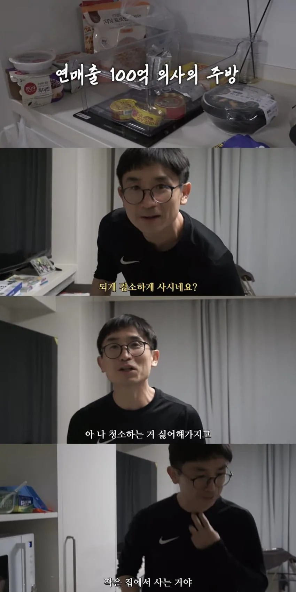
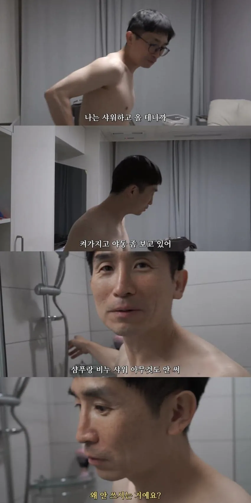
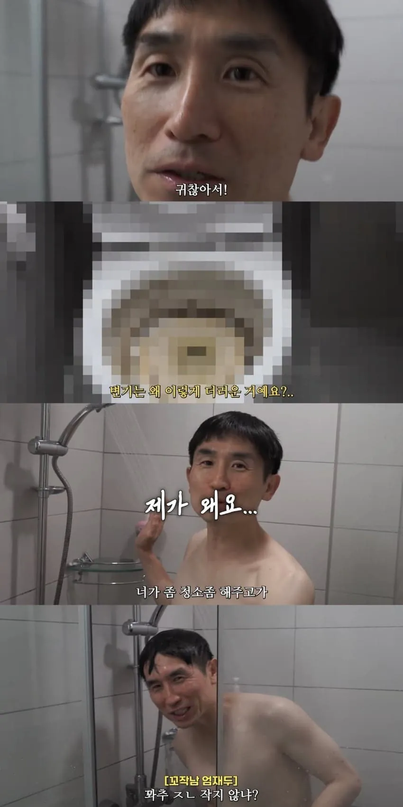
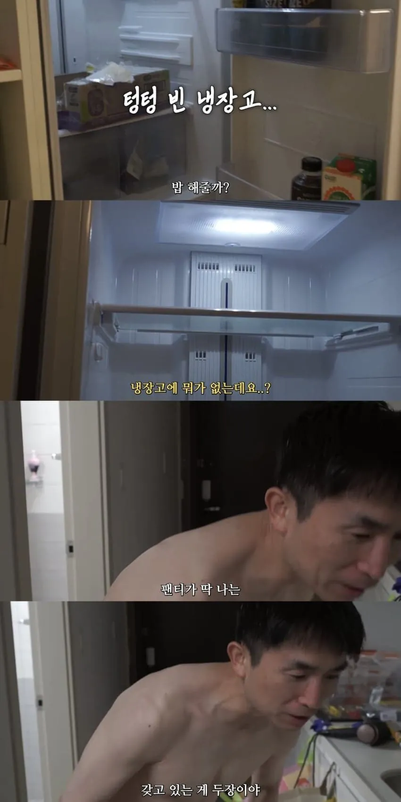
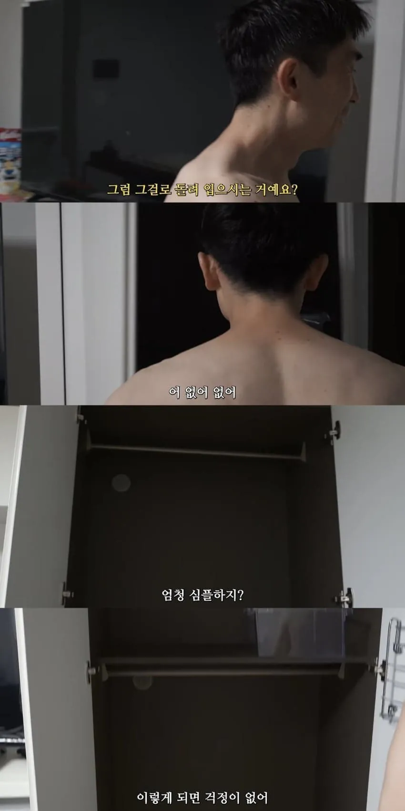
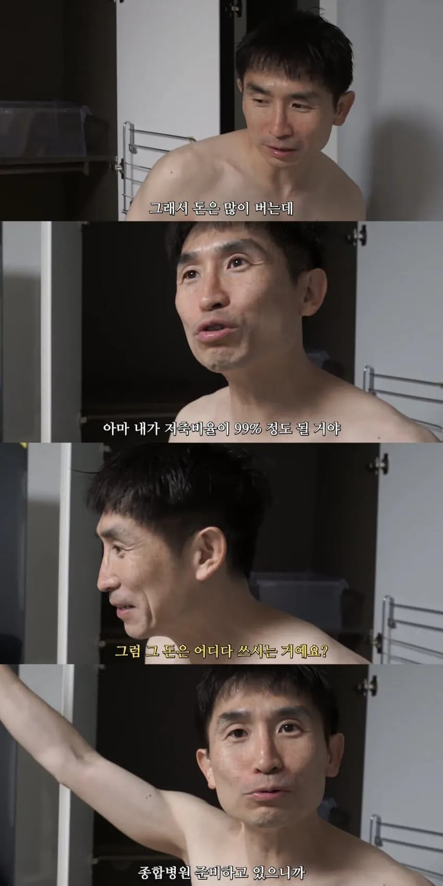
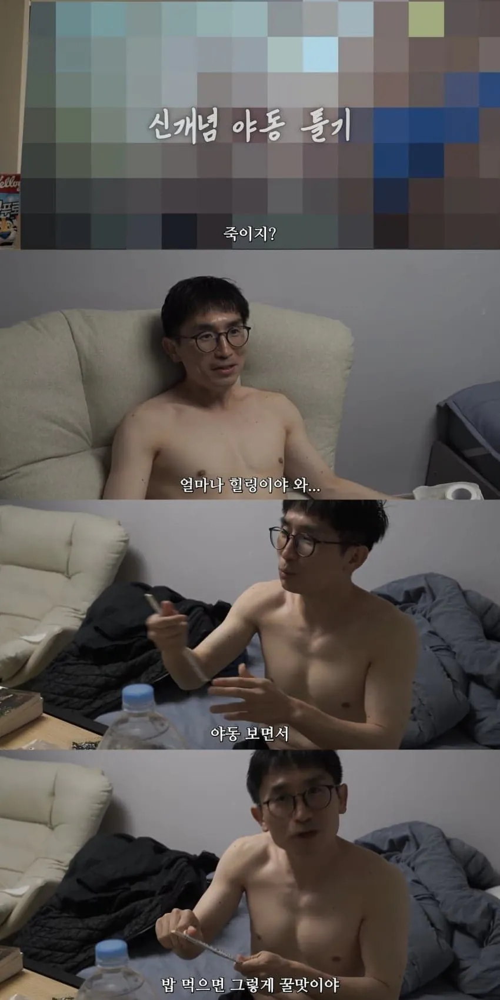
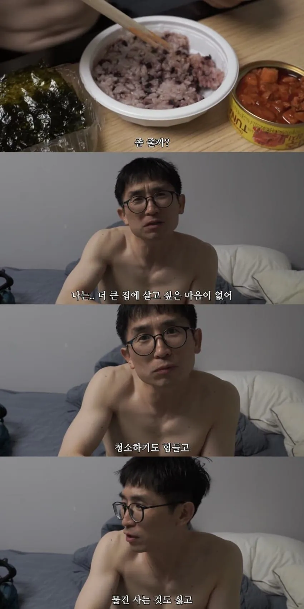
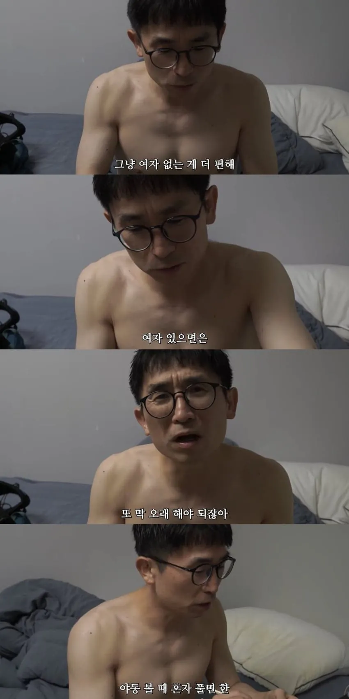
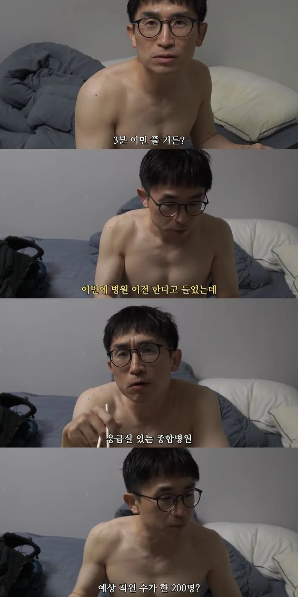
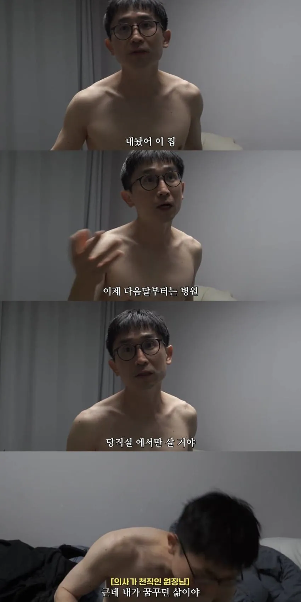
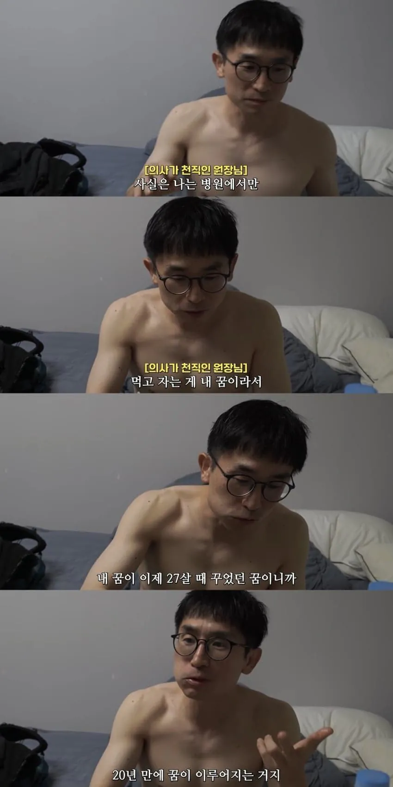
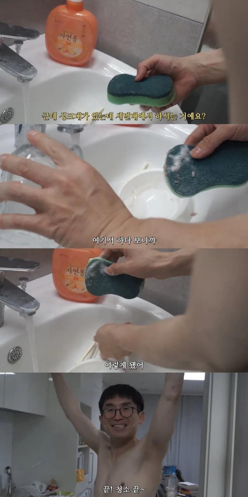














사람살리는데 병원 올인한 괴인인거야?
캐릭터 재미나네 하고 보다가 딴건 다 몰라도 변기는 ㅅㅂ 심하다
의스퍼거 같은건가... 변기나 베게누런거 같은건 주작도 못하겠네...
기안 84 의사 버전ㄷㄷㄷ
기인이네
잘 사는 사람한테 훈수 두는거만큼 웃긴거 없음
돈도 많이버는데 청소는 외주하시지
병원장쯤 되면 집은 새로 사면 되는것
그냥 의학에 능력치 몰빵한 사람인거 같은데?
지인으로는 둘수는 없지만 병원은 또 다른이야기 일듯.
자기 일 하나는 기깔 날거 같은데
변기청소는 진짜 락스만 한번 부어도 깨끗해지는디
ㅋㅋㅋㅋㅋ 밥먹는데 야동은 좀 깬다 재밌네
니들인생이나 걱정해라 ㅋㅋ
남의 시선이(그렇게 벌면서 집이니 차니 등등) 의미없다는걸 아시는 분.
기안 의사버전인가
무료 변호사들
의사 변호하는 거 ㅈㄴ 웃기긴하네
그런 놈들 전부 모자이크한
변기통에 얼굴 집어넣고 싶네 ㅋㅋㅋㅋㅋ
의사들은 절대 안먹는 음식 top5
이렁거 개소린게 ㅋㅋㅋㅋ
의사들 말데로면 저렇게 먹고살다간
병원건물올리기 전에 죽는거아니냐 ㅋㅋㅋ
내 친구 의사들 보면 곧 죽을거 같은 음식들만 골라서 대량으로 쳐묵던데. 맛있다고.
담배 죤나 피고 ㅋㅋㅋㅋ 편의점 음식 존나먹고 ㅋㅋㅋ 나 댜학병원 입원햇을때 담뱌피지마라 존나하더니 친구와서 담배피러나갓다가 흡연실애서 만남 ㅋㅋㅋㅋ
솔직히 저정도 수입이면 못하는게 아니라 안하는거긴한데 인간적으로 진짜 변기는 청소좀 하자 드런놈아
진짜 의사 맞아? 동네 백수 하나 섭외해서 걍 찍은거 아니고?
-- 진짜 의사 맞네 ㅋㅋ 비뇨의학과 원장이네
위생위생 거리는 새끼들 20년전으로 돌아가서 놀이터 흙 ㅈㄴ퍼맥이고 싶네ㅋㅋㅋ 뭐 수술실도 아니고 당직실보면 기절하겠네 평소에 마스크도 항상 쓰고 다니고 주머니에 새니타이저 항상 있지?
신뢰는 가네요 원장님
사람써서 청소시키지..ㅋㅋ
그냥 종합병원이라는 집을 사신거네ㅋㅋㅋㅋㅋㅋㅋㅋㅋㅋ 그냥 병원딸린 집 만들려고 필사의 저축을 하신거라 보면될듯
가성비 웅축된 뭔가가 세상에 돌아 다니는 것 같은데 ㅋㅋ
마케팅팀 일 ㅈ같이하네 ㅋㅋㅋㅋㅋㅋㅋㅋㅋ
그냥 딸쟁이 의사 ㅋㅋㅋ
당직실에서는 딸 못치잖아요
그냥 종합병원 때문에 영끌 중이라 저리 사는데 아무말 대잔치해서 유튜브 어그로 끈듯. 걍 대본 같다ㅋㅋㅋ
ㄹㅇ 이거지 ㅅㅂ ㅋㅋㅋㅋ
돈 많이 벌면 대부분은 큰집 사고 이쁜 여자 끼고 살고 싶을텐데
세상에는 다양한 사람이 많은듯
진짜 다른건 다 그냥 그렇구나 하는데 변기위생이랑 세면대설거지는 좀 아니지않나...
변기위생도 그래 그렇다치는데
세면대설거지는....